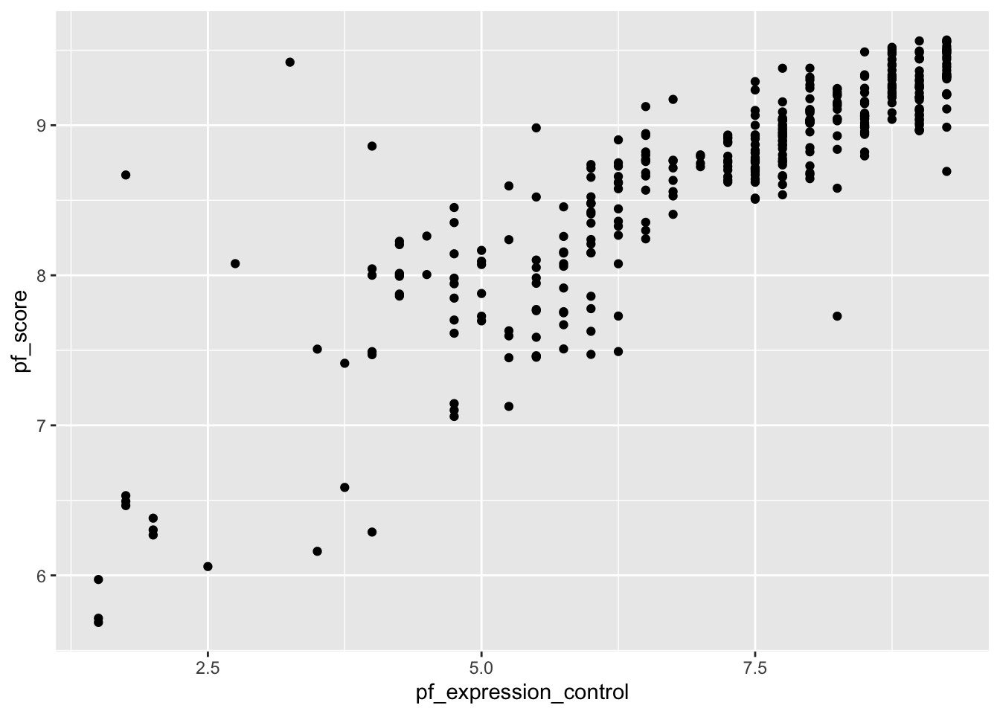
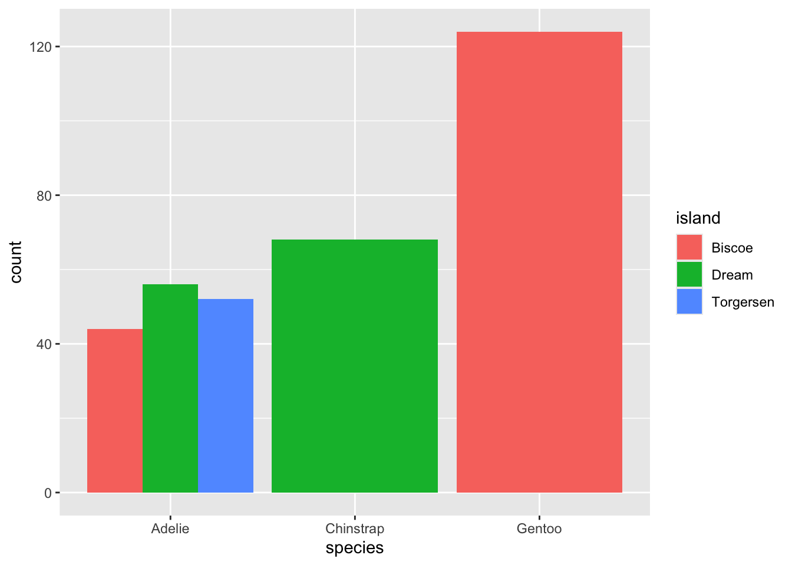
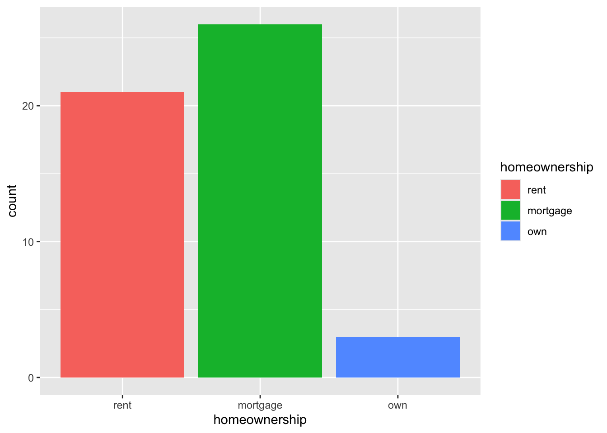
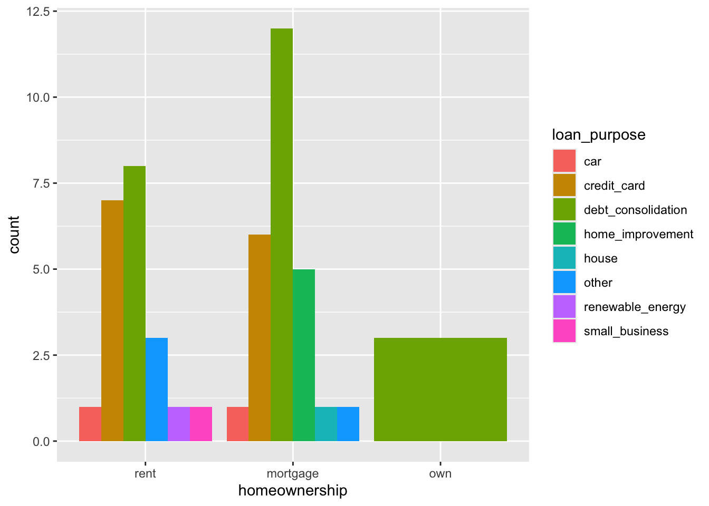
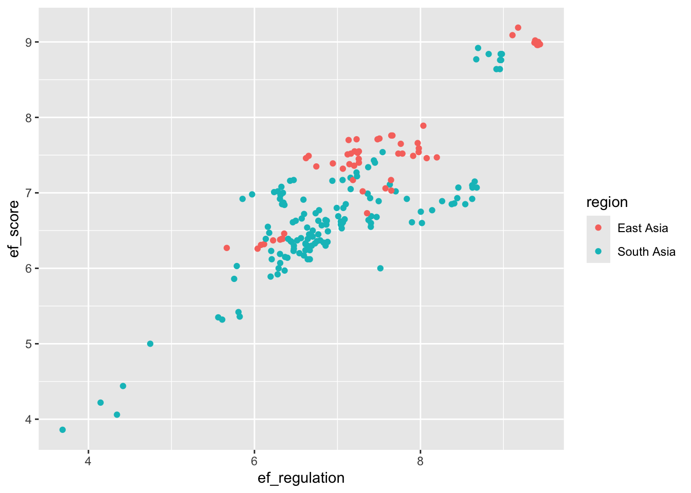

Code
data(hfi)In this lab, we’ll be analyzing data from the Human Freedom Index (HFI) reports. The data frame is contained within the openintro package that we have already installed. We will start by doing some basic data transformations (data wrangling), then proceed to summarize a few of the relationships within the data both graphically and numerically in order to find which variables can help tell a story about freedom.
Create a new Quarto document with the title Data Transformations and Linear Regression. Change the output format to pdf (note that it is set to html by default). Refer to lab_00_Guide if you don’t remember how to create a new quarto file. Save the file as lab_02.
Note that if you created the file correctly, it should appear under files with a .qmd extension(i.e., lab_02.qmd). If you do not have this file exactly as described, please stop and make sure you have it done correctly before you proceed.
After correctly creating the file, click on Render to see the output in pdf format. Note that it may pop up in a new window. You may want to delete the content that comes with the quarto template before you proceed.
In this lab, you will need four packages: openintro, tidyverse, statsr, and broom. Recall that we have installed the first two but not the last two. So, we start by installing statsr and broom. Run the following code in the console. Note that we are installing multiple packages on one step:
install.packages("statsr", "broom")After installing the two packages, open a code chunk within your quarto document and load all packages needed using the following code:
library(openintro)
library(tidyverse)
library(statsr)
library(broom)Run the code chunk with the packages to ensure that they are all working correctly. Remember to disable the library code output in your rendered pdf from quarto. You may use include=FALSE option.
As indicated earlier, the data we will work with is called hfi (human freedom index) and is part of the openintro package. All we need to do is create a code chunk and load the data into our quarto file using the following command:
data(hfi)Once you run the above command, you should be able to see a new object called hfi in the environment area. Click on it to examine the data.
You can learn more about the data by running the following command in the console:
?hfiQuestion: How many variables and how many observations are the hfi dataframe?
It is often claimed that data scientists spend nearly 80 percent of their time getting their data into an easily usable format. This process is often referred to as data wrangling and is quite broad. We are going to learn about a few basic functions that you can use to perform basic data transformations. These include:
The select function is used to select specific variables (columns) from a larger data set.
As you should have noticed, the hfi data frame is very big. Suppose you are only interested in the variables region, pf_expression_control and pf_score. We can use the select function to create a new data frame that has only these three variables. It if often advisable to have a new name for you new data frame. If you use the same name as the original, it will overwrite the original data frame. I have chosen to use the name hfi_new. Run the code below:
hfi_new <- hfi %>%
select (region,pf_expression_control , pf_score)
# Pipe hfi into the select function and specify the variables of interest.Note:
The mutate function is used for creating a new variable by altering (mutating) existing variable(s) in some way. Suppose, for example, let us say you wanted to convert the expression control variable (pf_expression_control) to percentages. We know that the expression control is measured out of 10. So we can divide each score by 10 and multiply by 100. Use the code below. We will name the new data frame as hfi_new_1:
hfi_new_2 <- hfi_new %>%
mutate(pf_exp_cont_percent= (pf_expression_control/10)*100)
# The new data frame will now have 4 variables.Note - The new data frame (hfi_new_2) now has 4 variables. - If you wanted to delete the original variable, you can use transmute instead of mutate. - The above example assumes that variable being mutated is numerical, otherwise, the operation may not be possible. How do you mutate a categorical variable?
The operations we have considered so far focus on columns (variables). We can also work on cases (rows). The filter function is used to choose rows that meet certain characteristics that you may be interested in. Suppose, for example, that we are interested in countries from Eastern Europe only. Let us create a new data frame (call it hfi_new_3) from hfi_new_2. Use the code below:
hfi_new_3 <- hfi_new_2 %>%
filter (region == "Eastern Europe")Note - As expected, the new data frame has only 198 cases (rows). - The number of columns (variables) stays the same as in hfi_new2.
If you wanted countries from Eastern Europe OR from Western Europe. To do this, you separate the regions using a | as shown below:
hfi_new_4 <- hfi_new_2 %>%
filter (region == "Eastern Europe"| region== "Western Europe")Group_by is a special kind of filtering that is commonly used alongside a summarize function. Suppose you want to compute the average freedom score (pf_score) by region. You can achieve this by piping the data into a group_by function that will group the data according to your wish and then call the summarize function. Run the code below:
hfi_new_4 %>%
group_by (region) %>%
summarize(mean(pf_score))You may have noticed that the code did not return a value for Eastern Europe. This is because there are some missing values in the data for Eastern Europe. To fix this, you can add one more step in the workflow that will drop the NA values from the pf_score variable. See below:
hfi_new_4 %>%
drop_na(pf_score)%>% # This is the new step
group_by (region) %>%
summarize(mean(pf_score))As can be seen from the hfi documentation (obtained by running ?hfi in the console), the variable pf_score measures the personal freedom score of a country. The higher the score a country has on pf_score, the more the personal freedoms enjoyed by its people. On the other hand, the variable pf_expression_control measures the extent to which countries place political pressure and controls on the media content. A low score on pf_expression_control means higher controls and political pressure.
What is the relationship between personal freedom score (pf_score) and the personal freedom expression control (pf_expression_contro l) for Western and Eastern European countries? To answer this question, we can create a scatter plot to visualize the relationship. We will use the hfi_new_4 data frame. Use the code below:
ggplot(data=hfi_new_4, mapping=aes(x=pf_expression_control, y=pf_score))+
geom_point()
Note:
From the above scatter plot, we see an increasing (positive) linear trend where countries with low pressure on media (i.e., high score on pf_expression_control) tend to have higher personal freedoms (high scores on pf_score) and vice versa. Furthermore, the relationship appears to be fairly strong with a few suspected outliers on the lower side.
In your code above, change the geom_point to geom_jitter. What do you notice?
The correlation coefficient gives us a numerical measure of the association between two (numerical) variables. It tells us the strength and direction of the association. See the Tidyverse workflow below for doing this:
hfi_new_4 %>%
drop_na(pf_score, pf_expression_control)%>%
summarize(cor(pf_score,pf_expression_control))
# Notice we first dropped missing values from the two variablesYou can also use base R (non-Tidyverse) code as follows but this is generally difficult to read/decode.
cor(hfi_new_4$pf_score, hfi_new_4$pf_expression_control, use="complete.obs")
# Notice we first dropped missing values from the two variablesIt is often helpful to generate both scatter plots and correlation coefficient in order to get a complete picture of the relationship.
Suppose we want to use the pf_expression_control variable (predictor) to estimate the values of personal freedom score (pf_score). We can do this by fitting a least squares regression line. We use a function called lm (for linear model) as follows:
model <- lm(pf_score ~ pf_expression_control, data =hfi_new_4)Note:
~ is ALWAYS the predictor variable (or x-variable).hfi_new_4.model because we will need it later. This means we won’t have to write the code all over again when we need it.It is often useful to visualize the line of best fit. You can achieve this by running the following ggplot commands:
ggplot(data =hfi_new_4, aes(x =pf_expression_control, y =pf_score))+
geom_jitter() +
geom_smooth(method ="lm", se=FALSE, color="red")
The model output seen earlier contains too much information which makes it hard to find what you need. In most cases, we are interested in the intercept, the slope, and perhaps the p-values (for statistical inference). To get a cleaner looking model output, we use the tidy function (contained in broom package. Create a code chunk and run the code below:
tidy(model)# A tibble: 2 × 5
term estimate std.error statistic p.value
<chr> <dbl> <dbl> <dbl> <dbl>
1 (Intercept) 6.13 0.0791 77.5 1.85e-222
2 pf_expression_control 0.354 0.0108 32.9 3.44e-109Note:
model you would have to write the code all over again and use that code in place of model in the tidy function above.Interpretation:
ef_score) for a countries with absolute political pressure and control on the media (i.e., pf_expression_control of 0) would be 6.131.pf_expression_control) by one unit, the personal freedom score (pf_score) increases by 0.354 on average.Finally, we can assess model fit using a statistic called coefficient of determination (aka R-squared). This statistic gives the proportion of variability in the response variable that is explained by the explanatory variable. We use the glance() function for this. Use the code below:
glance(model)# A tibble: 1 × 12
r.squared adj.r.squared sigma statistic p.value df logLik AIC BIC
<dbl> <dbl> <dbl> <dbl> <dbl> <dbl> <dbl> <dbl> <dbl>
1 0.756 0.755 0.359 1083. 3.44e-109 1 -138. 283. 294.
# ℹ 3 more variables: deviance <dbl>, df.residual <int>, nobs <int>Note:
pf_expression_control as the predictor.We can also run a regression analysis using a categorical variable. Suppose we want to pf_score by country. We want to focus on Western vs Eastern Europe so we will use hfi_new_4 data frame. Before we create anything, we may want to visualize the relationship by way of a scatter plot. You can use the geom_point or the geom_jitter to shake them up a little.
ggplot(data=hfi_new_4, aes(x=region, y=pf_score))+
geom_point()
# Try switching geom_point to geom_jitter and see what happens.region and pf_score?When you have a categorical variable, you may create side-by-side box plots. These are great in comparing the distribution of the numerical variable variable by category. Use the code below:
ggplot(data=hfi_new_4, aes(x=region, y=pf_score))+
geom_boxplot()
To fit a linear model, we use the same code as in the case of two numerical variables. We know that region is the predictor and `pf_score is the outcome. Go region comes after the ~ sign. See code below:
model_2 <- lm(pf_score ~ region, data =hfi_new_4)You can then tidy the model using the code:
tidy(model_2)# A tibble: 2 × 5
term estimate std.error statistic p.value
<chr> <dbl> <dbl> <dbl> <dbl>
1 (Intercept) 8.24 0.0412 200. 0
2 regionWestern Europe 0.910 0.0607 15.0 1.50e-39The formula for the model can be written as: \[\widehat{ef\_score}=8.24+0.91 \times region\_WesternEurope\]
Question:
region_WesternEurope in the model instead of the expected variable name (i.e., region)?You may want to create a new quarto file for the exercises. This way, it will be easy to keep track of what you are doing and avoid confusion with the work done during class. For this lab you need the same packages used in class (i.e., openintro, tidyverse, statsr, and broom).
(2 pts) Create a new data frame (name it new_hfi) with the variables region, ef_regulation, ef_regulation_business and ef_score. You will need this data frame in the next exercises.
(2 pts) Create a new data frame (name it new_hfi_1) from new_hfi. The data frame new_hfi_1 should have countries from South Asia or East Asia only. How many cases are in this new data frame?
(2 pts) Use the group_by function to compute the average ef_score for counties in East Asia and those in South Asia.
(4 pts) Reproduce the following scatter plot using the new_hfi_1 data frame. What can you say about the relationship between ef_score and ef_regulation for countries in East Asia South Asia?

(2 pts) Compute the correlation coefficient for the variables in exercise 4 above. Comment about the strength of the relationship.
(6 pts) Suppose we want to create a model for estimating the economic freedom score (ef_score) of countries in East or South Asia based on their business regulation (ef_regulation_business). Create a scatter plot to assess the relationship between the variables. Given the scatter plot, do you think it is appropriate to proceed with linear regression modeling? If yes, create the model and interpret its parameters(i.e., the slope and the intercept) in context. Use your model to estimate the economic freedom score of a country with a business regulation score of 3.9.
(2 pts) Find the R-squared value for the model in exercise 6 and explain its meaning in context.